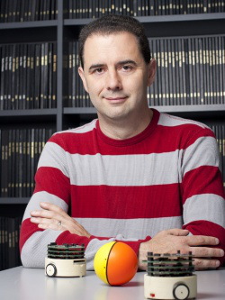

Agenda
Join us for an amazing panel of professors, a series of industry speakers, and catering from Noodles & Company.
There will also be a raffle for an iPad and gift cards!
Join us for an amazing panel of professors, a series of industry speakers, and catering from Noodles & Company.
There will also be a raffle for an iPad and gift cards!
Time |
Item |
|---|---|
| 11:00 AM | Check-in begins in the ECEB Atrium - Get your free T-shirt! |
| 11:30 AM |
Academia and Industry: Connecting the DotsJohn Quarton (T&M)John Quarton joined the University of Illinois in 2013 as the Director of both the Hoeft Technology & Management Program and the Academy for Entrepreneurial Leadership. After graduating from the University of Illinois in 1987 with a degree in electrical engineering, John began his career with General Electric in Syracuse, New York, as a systems engineer in their Anti-Submarine Warfare Systems Department. He joined State Farm’s Systems Department at their corporate headquarters in Bloomington, Illinois, in 1988 as a software developer and analyst. After serving in many information technology leadership capacities, John served as the IT manager and oversight manager of the State Farm Research & Development Center in the University of Illinois Research Park from 2006 to 2011. Prof. John DallesasseJohn M. Dallesasse received his B.S. degree in 1985, M.S. degree in 1987, and Ph.D. degree in 1991, all from the University of Illinois at Urbana-Champaign in electrical engineering. He has over 20 years of experience in the optoelectronics industry, and has held a wide range of positions in technology development, technology management, and executive management. Prior to joining the Department of Electrical and Computer Engineering at the University of Illinois at Urbana-Champaign, he was the Chief Technology Officer, Vice President, and co-founder of Skorpios Technologies, Inc., a company involved in the integration of compound semiconductor materials with silicon in a CMOS-compatible process. John’s research at the University is targeting photonic-electronic integration and novel coherent emitters for the mid-IR. His technical contributions include, with Nick Holonyak, Jr., the discovery of III‑V Oxidation, an important technology in the fabrication of Vertical-Cavity Surface-Emitting Lasers (VCSELs). Professor Dallesasse is a member of the American Physical Society, Tau Beta Pi, Eta Kappa Nu, and is a Fellow of both the IEEE and the Optical Society of America. He has over 50 publications and presentations, and 28 issued patents. Prof. Andrew SingerAndrew C. Singer received the S.B., S.M., and Ph.D. degrees, all in electrical engineering and computer science, from the Massachusetts Institute of Technology in 1990, 1992, and 1996, respectively. Since 1998, he has been on the faculty of the Department of Electrical and Computer Engineering at the University of Illinois at Urbana-Champaign, where he is currently holds the Fox Family Professorship in the ECE department. During the academic year 1996, he was a Postdoctoral Research Affiliate in the Research Laboratory of Electronics at MIT. From 1996 to 1998, he was a Research Scientist at Sanders, A Lockheed Martin Company in Manchester, New Hampshire, where he designed algorithms, architectures and systems for a variety of DOD applications. His research spans algorithms and architectures for statistical signal processing and communication systems, as well as information theory and machine learning. He was a Hughes Aircraft Masters Fellow, and was the recipient of the Harold L. Hazen Memorial Award for excellence in teaching in 1991. In 2000, he received the National Science Foundation CAREER Award, in 2001 he received the Xerox Award for Outstanding Faculty Award, and in 2002 was named a Willett Faculty Scholar. He has received numerous awards and honors, including Best Paper Awards from the IEEE Solid State Circuits Society in 2006 for his paper in the Journal of Solid State Circuits, and in 2008 from the IEEE Signal Processing Society for his paper in the Signal Processing Magazine. Dr. Singer has served as an Associate Editor for the IEEE Transactions on Signal Processing and is a member of the MIT Educational Council, and of Eta Kappa Nu and Tau Beta Pi. He is a Fellow of the IEEE and was selected as a Distinguished Lecturer of the IEEE Signal Processing Society in 2014. Prof. Steven LaValle

Steve LaValle started working with Oculus VR in September 2012, a few days after their successful Kickstarter campaign, and was the head scientist up until the Facebook acquisition in March 2014. He developed perceptually tuned head tracking methods based on IMUs and computer vision. He also led a team of perceptual psychologists to provide principled approaches to virtual reality system calibration and the design of comfortable user experiences. He is currently Professor of Computer Science at UIUC, where he joined in 2001. In addition, he earned his BS, MS, and PhD at UIUC in Electrical and Computer Engineering. He has worked in the field of robotics for over 20 years and is known for his introduction of the Rapidly exploring Random Tree (RRT) algorithm of motion planning and his 2006 book, Planning Algorithms. |
| 12:30 PM |
LunchLunch session with panel members as well as various company representatives. Catering from Noodles and Company. |
| 1:30 PM |
Professional Development Workshop, hosted by GEMaking the transition from student to young adult entering the workforce can be tough as you encounter many new challenges like relocation, shift in accountability, adjusting to a new environment, realizing your new “social status”, learning outside of school, translating day 1, and understanding how to interpret, gather, and deal with feedback. We’ll review key areas you need to be aware of and accomplish during your first 90 days of employment to ensure success in your new role. Topics of discussion include: knowing the basics, understanding what’s expected of you, brand management, engagement, and owning your career. You won’t want to miss this! |
| 2:30 PM |
Intermission (15 Minutes)
|
| 2:45 PM |
Matt Merten | Engineering: Not just a profession, but a way of life
Matthew Merten, University of Illinois at Urbana-Champaign BS’96 MS’99 PhD’02, studied runtime optimization and high performance microarchitecture under Professor Wen-Mei Hwu. Upon graduating, Matthew joined Intel Corporation in Hillsboro, Oregon, joining the Pentium 4 architecture team. Since joining, he has contributed to the Nehalem, Westmere, Haswell, and Broadwell Core microprocessors in various roles including Simultaneous Multithreading Architect and Out-of-Order Execution Architect. In those roles, Matthew contributed to the development of Transactional Synchronization Extensions and numerous microarchitectural performance features. In 2012, he and his teammates transitioned to the Atom microprocessor team and he has since taken on a corporate technology role to converge and improve Performance Monitoring. Matthew is an inventor with 12 patents (15 more pending) and an author with 13 academic publications. Living in Hillsboro, Oregon, he and his wife have 2 children (ages 7 and 11). He is active in the leadership team at his church and at his childrens’ school, and enjoys woodworking, photography, hiking, and downhill skiing. Joel S. Emer | Industrial Research: The Intersection of Science and TechnologyDr. Joel S. Emer is a Senior Distinguished Research Scientist in Nvidia's Architecture Research group. He is responsible for exploration of future architectures as well as modeling and analysis methodologies. In his spare time, he is a Professor of the Practice at MIT, where he teaches computer architecture and supervises graduate students. Prior to joining Nvidia he worked at Intel where he was an Intel Fellow and Director of Microarchitecture Research. Previously he worked at Compaq and Digital Equipment Corporation. Emer has held various research and advanced development positions investigating processor microarchitecture and developing performance modeling and evaluation techniques. He has made architectural contributions to a number of VAX, Alpha and X86 processors and is recognized as one of the developers of the widely employed quantitative approach to processor performance evaluation. More recently, he has been recognized for his contributions in the advancement of simultaneous multithreading technology, processor reliability analysis, cache organization and spatial architectures. Emer received a bachelor's degree with highest honors in electrical engineering in 1974, and his master's degree in 1975 -- both from Purdue University. He earned a doctorate in electrical engineering from the University of Illinois in 1979. Emer has received numerous public recognitions, including being named a Fellow of both the ACM and IEEE, and he was the 2009 recipient of the Eckert-Mauchly award for lifetime contributions in computer architecture. In 2011, he was received the UIUC ECE Distinguished Alumni award. Eric Klinker | Hacking Your Career Path for Fun and ProfitEric Klinker is President and CEO of BitTorrent, Inc., and has two decades of networking and technology experience. As CEO, Eric is responsible for an ecosystem of software, devices, and protocols that moves between 20% and 40% of the world's Internet traffic on a daily basis, and has more than 170 million monthly users worldwide. He previously served as CTO and Vice President of Engineering at Internap Network Services and CTO at netVmg, acquired by Internap. Eric was also an early builder of broadband networks and a pioneer in network optimization technologies. In various roles with Excite@Home Network, he was instrumental in the development of the world's first large-scale broadband ISP. Prior to that, he led engineering teams at the US Naval Research Laboratory focusing on information security, high assurance computing, and multicast data communication. He has authored numerous networking patents, and routinely advises technology companies on ways to make the Internet work more efficiently. |
| 4:45 PM |
Q&A with SpeakersShort time to allow interaction between students and speakers. |
| 5:00 PM |
Snacks and Meet 'n' GreetSmall snacks available post-conference with time allowed for students to talk to speakers (dependent on speaker availability) |